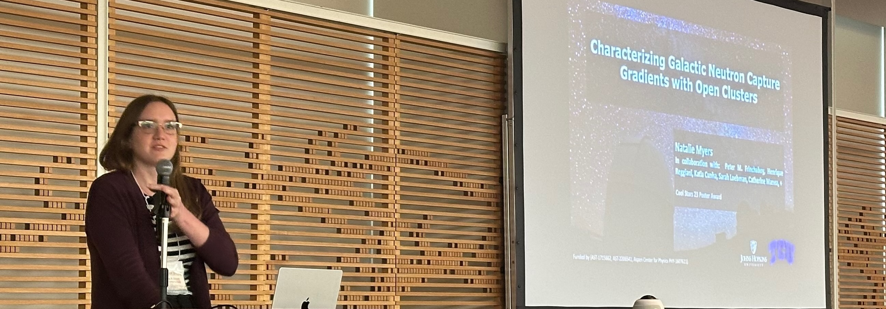
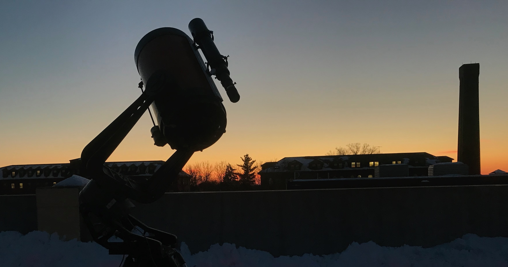

A little bit about me
I am a Galactic Archeologist; I use stellar populations to better understand the Milky Way, how it formed, and why it is the way it is today! In particular, I gravitate towards the topics of Galactic Chemical Evolution and stellar evolution in my research. Born and raised in Madison Wisconsin, I grew up with a love of the arts and sciences. I spent much of my younger years drawing and painting, and when I realized that "physics" was the science where I could learn about the how and why light and colors are what they are, I was determined to study it. At the University of St. Thomas in St. Paul Minnesota, I learned about spectroscopy and all the information light hides. After getting the opportunity to do stellar spectroscopy research with Dr. Mike Wood, I headed to Texas Christian University to work with Dr. Peter Frinchaboy as a grad student. After receiving my PhD in (astro)physics, I have moved to Johns Hopkins University where I am an Assistant Research Scientist working with Dr. Kevin Schlaufman.
What would you like to know?

About My Research!
I am working on multiple research projects. Some involving open clusters and Galactic gradients, some involving the heaviest elements, some involving chemical clocks, and some focused on the chemical fingerprint of stellar populations in the Milky Way.

Side Quests: Art, Photography, and Birding?
While I am not a professional photographer, artist, nor birder. I've had a lot of amazing opportunities to travel to cool new places with exotic views and birds! In addition, drawing/painting has been a personal hobby for my whole life, which I'm trying to reconnect with in the few moments of free time I have.

Public Outreach
Under Construction!